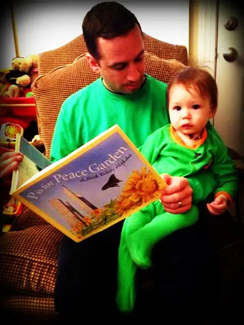
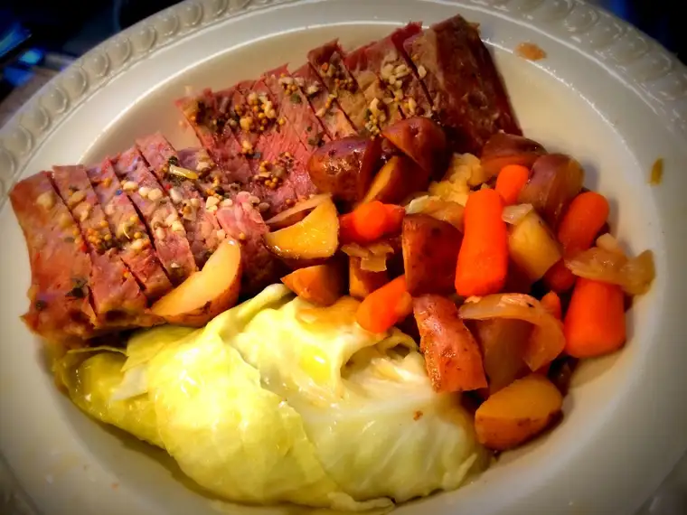
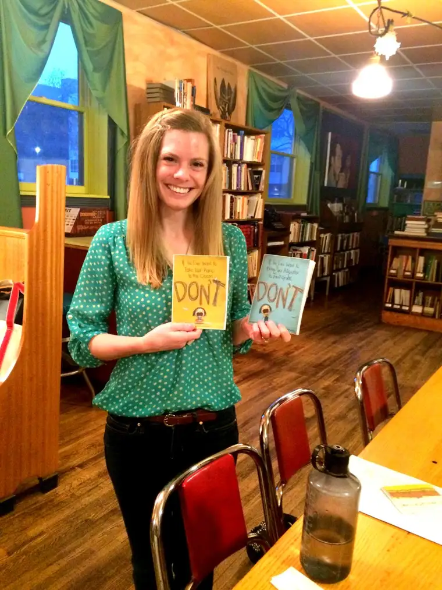
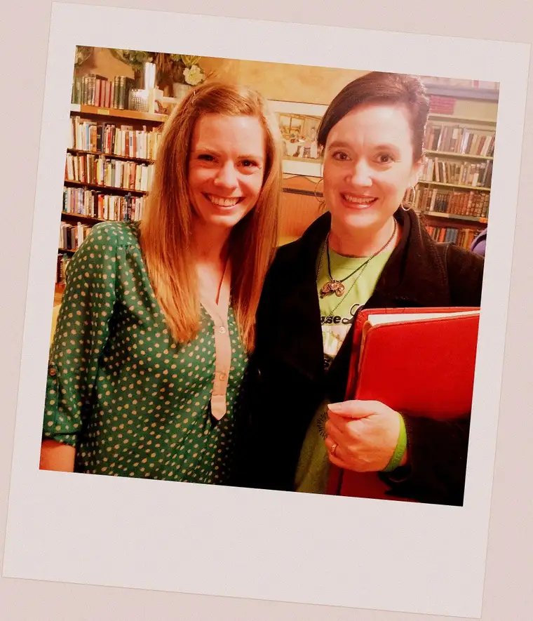

I had a whole other post planned for today, but a visual changed everything.
{kind=link}

A few weeks ago, my second cousins in Maryland shared that they’d just bought my children’s book, “P is for Peace Garden: A North Dakota Alphabet,” for their little son, Elliott. When Caroline, his mama, shared a picture of Elliott with the book and his daddy in their cute green, St. Patrick’s Day garb — it all came flooding back.
St. Patrick’s Day — the day my very first copies of “Peace Garden” arrived on my doorstep. I remember being in my pajamas, chasing the kids around the house — or perhaps they were chasing me — when the doorbell rang. What a thrilling moment! Could I sign for the package? Why yes, yes I could! I was 8 months pregnant with baby #5, and the confluence of books and baby kicking around on this day sealed it for me. This new little one would bear the middle name of Patrick, also a family name.
The next day, the celebratory flowers arrived. Here I am, puffy-cheeked, bursting with new life through both book and baby. It was so exciting — and a little overwhelming, too. I felt so incredibly blessed, and still do!
{kind=link}
It’s hard to believe but it’s been a decade already. Ten years of “Peace Garden,” and ten years of raising babies. What a ride.

{kind=link}
This book has been really good to me. I still love sharing it with kids, and anyone else who is interested in a beautiful, alphabet pictorial about the great state in which I reside, and where so many of my Irish roots first began to blossom.
St. Patrick’s Day 2015 was busy as ever. Among the tasks I had before me was making my favorite meal of the year — corned beef and cabbage! Most of the kids drool over this dish too — it’s not hard to convince them to the come to the table. Well, there was one hold-out who wanted to make a sandwich instead (whose kid is this??). But it turned out…wow. Yum!
{kind=link}

It was important to me to have an honest-to-goodness sit-down meal tonight, but that meant I would be late to another event I had hoped I could attend. I’d heard through a writers’ group that Elise Parsley, an up-and-coming picture-book illustrator, would be giving a little presentation downtown Fargo. Even though my most recent work is off the track of children’s literature, I will always have a love for kids’ lit, and hope to get back at it one of these days. So, I decided to go. It just felt right to get back in touch with my children’s books heart on this particular day.
Well, Elise did not disappoint. Not only was she a total gem — really great at speaking and so sweet — but it was just so exciting to hear a little of her story, and how she was discovered — not that long ago actually!
{kind=link}

She lives in our area currently. In fact, I learned tonight that we both attended the same university — Minnesota State University Moorhead, just across the river from Fargo. But soon, she’ll be relocating to her home state of South Dakota; moving on not only from our city but straight into her dream. Elise has achieved what many thousands of writers want, but not many accomplish. She’s landed a coveted agent, Steven Malk, at one of the most coveted agencies, Writers House, and a three-book deal with a major publisher to boot — all within a matter of hours. Here’s part of her impressive story.
This didn’t happen overnight though. Elise has been working hard for years. It might seem like it happened like lightning, but she’s been submitting, sweating, wading through those painful rejections just like everyone else. Well, maybe a little more tenaciously than most. And finally, it all paid off. After seeing Elise’s work and meeting her, there’s no doubt in my mind she has an illustrious career ahead of her. Check out her website. Is this not fun?!
So, it’s a day, a week, a month to celebrate; for me, my own small successes in writing, and now, to cheer on a fellow children’s lit lover who has just achieved something phenomenal. The best part is that she’s going to make a lot of kids smile in the years to come. What can be better than that?
{kind=link}

Congrats Elise! Happy 10th birthday “P is for Peace Garden!”
Q4U: What good thing are you celebrating this week?